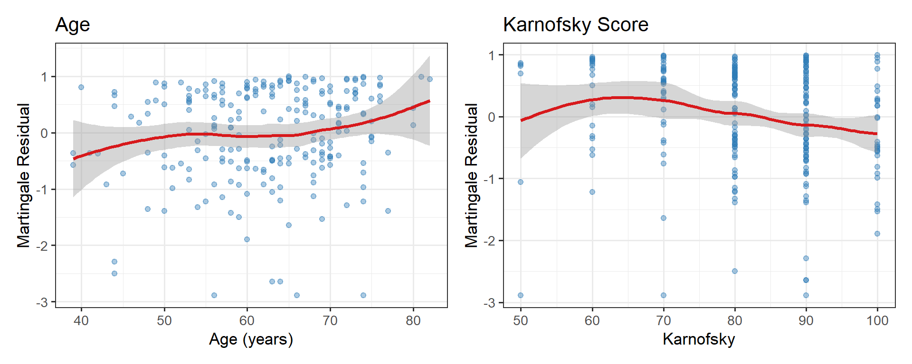

systemfonts and textshaping have been compiled with different versions of Freetype. Because of this, textshaping will not use the font cache provided by systemfonts12 Concomitant Variables and Model Building
Selecting and interpreting covariate effects is as important as fitting the model. This chapter covers additive and multiplicative hazard models, age-of-onset distributions, and strategies for covariate selection in survival models.
12.1 Multiplicative vs Additive Models
12.1.1 Proportional Hazards (Multiplicative)
\[h(t;\mathbf{x}) = h_0(t) \exp(\boldsymbol{\beta}^T \mathbf{x})\]
Covariates act multiplicatively on the hazard. Log hazard ratio is linear in covariates.
12.1.2 Aalen’s Additive Hazard Model
\[h(t;\mathbf{x}) = h_0(t) + \boldsymbol{\beta}(t)^T \mathbf{x}\]
Covariates act additively on the hazard. The regression coefficients \(\boldsymbol{\beta}(t)\) are time-varying, making this a very flexible model. Useful when the PH assumption fails.
12.2 Selecting Concomitant Variables
12.2.1 Step 1: Univariable Screening
Fit each covariate separately and flag those with \(p < 0.25\) (a liberal threshold used to avoid excluding important predictors):
covs <- c("age","sex","ph.ecog","ph.karno","wt.loss")
uni_results <- lapply(covs, function(v) {
fml <- as.formula(paste("Surv(time, status==2) ~", v))
fit <- coxph(fml, data = lung)
tidy(fit, exponentiate = TRUE, conf.int = TRUE) |>
select(term, estimate, conf.low, conf.high, p.value) |>
mutate(across(where(is.numeric), \(x) round(x,3)))
})
bind_rows(uni_results) |>
kbl(col.names = c("Covariate","HR","Lower 95%","Upper 95%","p-value"),
align = "lcccc") |>
kable_styling(bootstrap_options = c("striped","condensed"),
full_width = FALSE, position = "center")| Covariate | HR | Lower 95% | Upper 95% | p-value |
|---|---|---|---|---|
| age | 1.019 | 1.001 | 1.037 | 0.042 |
| sex | 0.588 | 0.424 | 0.816 | 0.001 |
| ph.ecog | 1.610 | 1.289 | 2.010 | 0.000 |
| ph.karno | 0.984 | 0.972 | 0.995 | 0.005 |
| wt.loss | 1.001 | 0.989 | 1.013 | 0.828 |
12.2.2 Step 2: Multivariable Model with Stepwise Selection
vars <- c("time","status","age","sex",
"ph.ecog","ph.karno","wt.loss")
lung_cc <- lung[complete.cases(lung[, vars]), vars]
cox_full <- coxph(
Surv(time, status == 2) ~ age + sex + ph.ecog +
ph.karno + wt.loss,
data = lung_cc
)
cox_step <- step(cox_full, direction = "both", trace = 0)
summary(cox_step)Call:
coxph(formula = Surv(time, status == 2) ~ age + sex + ph.ecog +
ph.karno, data = lung_cc)
n= 213, number of events= 151
coef exp(coef) se(coef) z Pr(>|z|)
age 0.015288 1.015405 0.009866 1.550 0.121244
sex -0.613000 0.541723 0.176835 -3.467 0.000527 ***
ph.ecog 0.676438 1.966860 0.186552 3.626 0.000288 ***
ph.karno 0.015196 1.015313 0.009969 1.524 0.127406
---
Signif. codes: 0 '***' 0.001 '**' 0.01 '*' 0.05 '.' 0.1 ' ' 1
exp(coef) exp(-coef) lower .95 upper .95
age 1.0154 0.9848 0.9960 1.0352
sex 0.5417 1.8460 0.3830 0.7661
ph.ecog 1.9669 0.5084 1.3645 2.8351
ph.karno 1.0153 0.9849 0.9957 1.0353
Concordance= 0.637 (se = 0.026 )
Likelihood ratio test= 31.54 on 4 df, p=2e-06
Wald test = 30.84 on 4 df, p=3e-06
Score (logrank) test = 31.28 on 4 df, p=3e-0612.2.3 Step 3: Model Diagnostics
Cox–Snell residuals assess overall fit; Martingale residuals check functional form; Deviance residuals identify influential observations.
# Null model residuals for functional form assessment
cox_null <- coxph(Surv(time, status==2) ~ 1, data = lung)
mart_res <- residuals(cox_null, type = "martingale")
lung_r <- lung |> mutate(mart = mart_res)
p1 <- ggplot(lung_r, aes(x = age, y = mart)) +
geom_point(alpha = 0.4, colour = "#2C7BB6") +
geom_smooth(method = "loess", se = TRUE, colour = "#D7191C") +
labs(title = "Age", x = "Age (years)", y = "Martingale Residual")
p2 <- ggplot(lung_r, aes(x = ph.karno, y = mart)) +
geom_point(alpha = 0.4, colour = "#2C7BB6") +
geom_smooth(method = "loess", se = TRUE, colour = "#D7191C") +
labs(title = "Karnofsky Score", x = "Karnofsky", y = "Martingale Residual")
library(patchwork)
p1 + p2
12.3 Logistic Regression for Fixed-Time Survival
When interest lies in survival to a specific time point \(t_0\) (e.g., one year), logistic regression is appropriate:
\[\text{logit}[P(T \leq t_0 \mid \mathbf{x})] = \alpha + \boldsymbol{\beta}^T\mathbf{x}\]
lung_lr <- lung |>
mutate(dead_1yr = as.integer(status == 2 & time <= 365))
logit_fit <- glm(
dead_1yr ~ age + factor(sex) + ph.ecog,
data = lung_lr,
family = binomial
)
tidy(logit_fit, exponentiate = TRUE, conf.int = TRUE) |>
select(term, estimate, conf.low, conf.high, statistic, p.value) |>
mutate(across(where(is.numeric), \(x) round(x, 3))) |>
kbl(
col.names = c(
"Covariate",
"OR",
"Lower 95%",
"Upper 95%",
"z",
"p-value"
),
caption = "Logistic regression: odds ratios for 1-year mortality",
align = "lccccc"
) |>
kable_styling(
bootstrap_options = c("striped", "condensed"),
full_width = FALSE,
position = "center"
)| Covariate | OR | Lower 95% | Upper 95% | z | p-value |
|---|---|---|---|---|---|
| (Intercept) | 0.464 | 0.064 | 3.302 | -0.767 | 0.443 |
| age | 1.008 | 0.978 | 1.040 | 0.530 | 0.596 |
| factor(sex)2 | 0.411 | 0.230 | 0.723 | -3.057 | 0.002 |
| ph.ecog | 2.138 | 1.432 | 3.259 | 3.636 | 0.000 |
12.4 Age-of-Onset Distributions
For diseases where the event is disease onset rather than death, we model:
\[S(t) = P(\text{onset age} > t)\]
A parallel-system model assumes \(k\) susceptibility components must all “fail” for onset to occur:
\[S(t) = [S_1(t)]^k\]
If \(S_1(t) = e^{-\lambda t}\) (exponential), then \(S(t) = e^{-k\lambda t}\) — still exponential but with rate \(k\lambda\). With Weibull components, the parallel model produces a Weibull mixture.
Quotes to Inspire
“It is easy to lie with statistics. It is hard to tell the truth without statistics.”
— Andrejs Dunkels